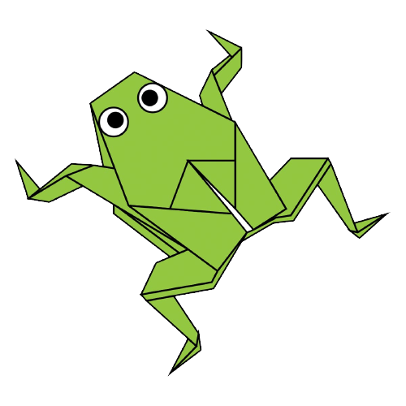
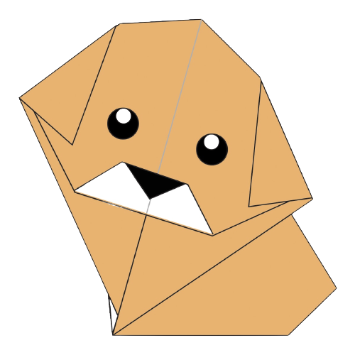

CAMEL

- Click on the image to learn how to make an origami camel!
- Camels live in the desert and have some amazing features.
- Camels have three sets of eyelids and two rows of eyelashes to keep sand out of their eyes.
- Their humps let them store up to 80 pounds of fat which they can live off for weeks and even months!
Chameleon

- Click on the image to learn how to make an origami chameleon!
- Chameleons are widely popular creatures known for their ability to change their skin colours.
- The most disquieting thing about chameleons is their eyes, which move independently in their sockets and thus provide a near-360-degree scope of vision.
- Chameleons are equipped with long, sticky tongues, often two or three times the length of their bodies.
Cicada

- Click on the image to learn how to make an origami cicada!
- Cicadas are famous for their penchant for disappearing entirely for many years, only to reappear in force at a regular interval.
- There are more than 3,000 species of cicadas!
- Cicadas make noise like toy frogs. Isn't that funny?
Panda

- Click on the image to learn how to make an origami panda!
- Pandas are characterised by large, black patches around its eyes, over the ears, and across its round body.
- Giant pandas are good at climbing trees and can also swim.
- An adult panda can eat 12–38 kilos of bamboo per day!
Pigeon

- Click on the image to learn how to make an origami pigeon!
- Pigeon are stout-bodied birds with short necks, and short slender bills that in some species feature fleshy ceres.
- Pigeons are incredibly complex and intelligent animals.
- They are renowned for their outstanding navigational abilities!
Teddy Bear

- Click on the image to learn how to make an origami teddy bear!
- A teddy bear is a stuffed toy in the form of a bear.
- The term bear-hug was first recorded in 1846.
- Teddy bears got their name from the story that Teddy Roosevelt refused to shoot a bear cub while on a hunting trip in 1902.
Frog
- Click on the image to learn how to make an origami frog!
- A frog is any member of a diverse and largely carnivorous group of short-bodied, tailless amphibians composing the order Anura
- There are over 5,000 species of frog.
- Some frogs can jump over 20 times their own body length; that is like a human jumping 30m
Dog
- Click on the image to learn how to make an origami dog!
- The dog is a domesticated carnivore of the family Canidae.
- Some are fast and could even beat a cheetah!
- Some have such good noses they can sniff out medical problems.